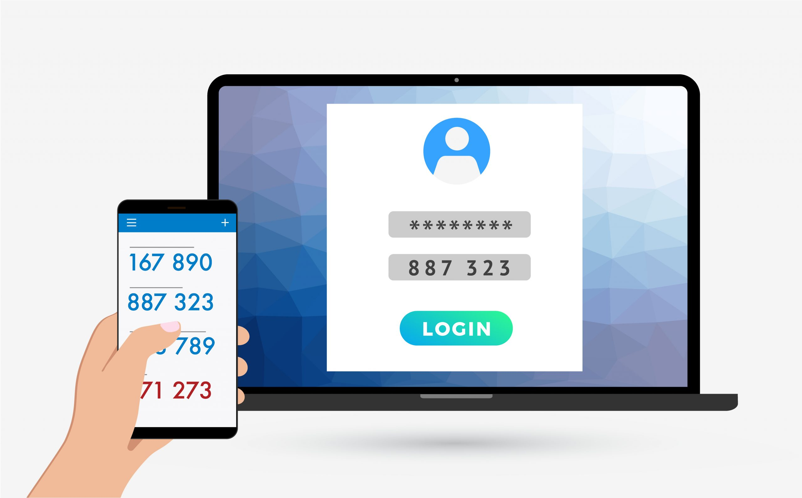
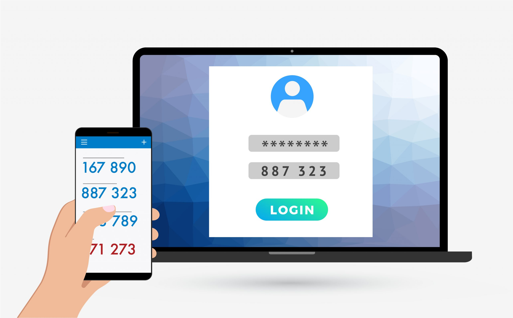
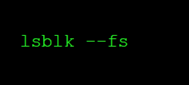
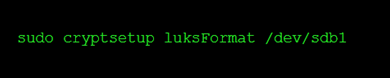
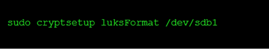
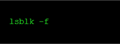
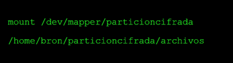
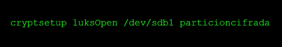
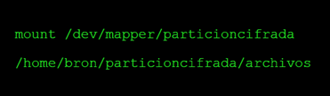

Seguridad en Linux

La seguridad en Linux es un pilar fundamental para la administración efectiva de sistemas, protegiendo contra accesos no autorizados, pérdida de datos, y otros vectores de ataque.
Sistemas de autentificación
Es un proceso mediante el cual se verifica la identidad de un usuario o sistema antes de permitir el acceso a determinados recursos o servicios.
Los métodos de autenticación pueden clasificarse en tres grupos, en función de lo que utilizan para verificar la identidad:
- Algo que el usuario sabe
- Algo que el usuario posee
- Una característica física del usuario
Sistemas basados en algo conocido:
Sistemas basados en algo poseído
Sistemas de autentificación biométrica
En él se decide que un usuario es quien dice ser si conoce una palabra o serie de caracteres, que sólo debe conocer el usuario. Esta información que conoce el usuario debe mantenerla en secreto sino el sistema perdería toda fuerza, debido a que cualquiera que la conozca podría suplantar su identidad, a pesar de todos los inconvenientes que esto podría generar es uno de los métodos de autentificación más usados, para combatir sus defectos se combina junta a otros pasos como agregar un número telefónico o un código.
 

Este sistema basa basa su funcionamiento en la posesión por parte del usuario de un objeto único. en esta categoría podemos incluir desde una llave para una cerradura común y corriente hasta una tarjeta inteligente con alta encriptación, para poder acceder a un sistema que use este tipo de debemos estar registrados en él, de esta manera el sistema reconoce nuestra identidad.

Existen sistemas donde no se aplica de forma tan necesaria la criptografía, sino que establecen sus criterios de acceso mediante el reconocimiento de una característica física humana, desde la huella dactilar hasta el análisis de retina existen numerosos métodos, las razones por las que estos sistemas no están altamente difundidos es su coste; imposible de asumir para una pequeña entidad, y su dificultad de mantenimiento.

Cifrado
En sistemas operativos Linux tenemos muchas opciones para cifrar datos en Linux, por ejemplo, podemos usar dm-crypt, LUKS, eCryptfs e incluso programas como Veracrypt que son realmente versátiles y muy recomendables, en este caso nos centraremos en LUKS (Linux Unified Key Setup) que nos permite cifrar discos, particiones y también volúmenes lógicos que nosotros creemos en nuestro equipo.
Sistema de cifrado
Objetivo de cifrar los datos
En el caso de LUKS se utiliza una herramienta que utiliza el cifrado AES (Advanced Encryption Standard) para proteger los datos de los discos duros, AES es un algoritmo de cifrado simétrico, que utiliza bloques de cifrado de 128 bits, 198 bits o 256 bits, cuando LUKS almacena los datos en bloques este almacena la información de cada bloque de datos de forma individual, esto tiene la ventaja de que se puede utilizar en prácticamente cualquier sistema de archivos, haciendo de esta herramienta una solución muy flexible.
El cifrado de los discos, particiones o archivos tiene un objetivo claro, aplicarles un algoritmo a estos con el fin de que la información que tenga solo pueda ser inteligible por nosotros, esto se realiza aplicando un formato diferente al que tenía con tal de proteger la información de los archivos, particiones o discos, de esta manera, los usuarios al disponer de las credenciales pueden proteger esta información y solamente ellos tendrían el acceso al contar, como lo puede ser una contraseña.

Comandos
| Comando | Descripcion |
|---|---|
|  | Si queremos comprobar las particiones que tenemos creadas, ponemos el comando lsblk--fs |
| Si queremos ver las características de LUKS (algoritmo de cifrado simétrico usado, longitud de clave ,etc), ponemos el siguiente comando: cryptsetup luksDump /dev/sda5 |
Cifrar cualquier disco o partición (con pérdida de datos)
-
Lo primero que tenemos que hacer es crear una nueva partición en el disco, para posteriormente utilizarla, ejecutamos el siguiente comando:
 -
Y continuamos poniendo «n» para crear una nueva partición, ponemos «p» para hacerla primaria, y aceptamos los valores que nos indican para tener una partición de todo el disco duro, si queremos hacerla más pequeña, tendremos que modificar los sectores para esta partición en concreto.
-
Una vez que hayamos hecho esto, deberemos poner la partición sdb1 recién creada con el formato LUKS, para ello ejecutamos el siguiente comando:
 -
Ponemos «YES» en mayúsculas, introducimos la clave que queremos, y esperamos hasta que esté listo.
-
Si ejecutamos este comando podremos ver todos los discos duros, las particiones y el sistema de archivos que estamos utilizando.
 -
Una vez que lo hayamos hecho, tendremos que abrir la partición con LUKS que acabamos de crear, para poder realizar esto ponemos el siguiente comando:
-
Introducimos la contraseña, y a continuación volvemos a ejecutar el «lsblk -f» y nos aparecerá «particioncifrada» que es el nombre identificador que le hemos dado, pero podemos cambiarlo en cualquier momento.
-
Ahora tenemos que darle formato de archivos a esta partición, lo normal sería hacerlo con EXT4 también, para ello, ponemos el siguiente comando:
-
Y ya tendremos el sistema de archivos EXT4 en esta partición cifrada.
-
Ahora deberemos montar la partición a un directorio, para hacerlo, deberemos crear en la /home o donde queramos el punto de montaje:
-
Y ahora tenemos que montarlo:

Si reiniciamos el ordenador, no estará montada la unidad, ni tampoco tendremos abierta la partición con LUKS, por tanto, cada vez que reiniciemos y queramos acceder a esta partición, tendremos que hacer lo siguiente:

Introducimos la contraseña cuando nos la pida, y montamos la unidad nuevamente:
